Handleiding - MIM-Profiel, -Toolbox & -MDG Genereren
| Software/Standaard | Versie |
|---|---|
| MIM-standaard | 1.1.1 |
| Enterprise Architect | 15.2 |
| Subversion (SVN) | 1.14.1 |
Inhoud
- Voorbereiding
- Profiel publiceren
- Genereer MDG Technologie
- Test de Toolbox
- Quicklinker
- Aandachtspunten
- MIM MDG
- Regels
Beschrijving
Deze handleiding beschrijft het proces voor het genereren van een customized toolbox voor modelleren met Enterprise Architect. Het gaat specifiek in op het maken van de MIM-toolbox. Maar ook voor het genereren customized toolboxen in het algemeen, biedt deze beschrijving een handig overzicht van de benodigde stappen. De meest actuele versie van MIM kun je (hier) raadplegen.
1 Voorbereiding
Controleer voordat je (MIM-)profielen gaat genereren eerst de volgende zaken:
- Beschik je over de benodigde bestanden?
- Zijn de benodigde profielen aanwezig?
- Is het versienummer correct ingevuld?
1.1 Benodigde bestanden
Controleer of je beschikt over alle benodigde bestanden:
- EA-bestand met MIM profile packages voor het genereren van de profiles en mdg technology (Create MDG Technology File), hiertoe behoort ten minste één package per stereotype:
«profile»,«diagram profile»en«toolbox profile»). - MTS-bestand met MIM properties voor het genereren van MDG Technology (Working with MTS Files)
- CSV-bestand met definities van de quick linkers (Quick Linker Definition Format)
Het MTS- en CSV-bestand vind je hier (zie ook: onderstaande afbeelding).
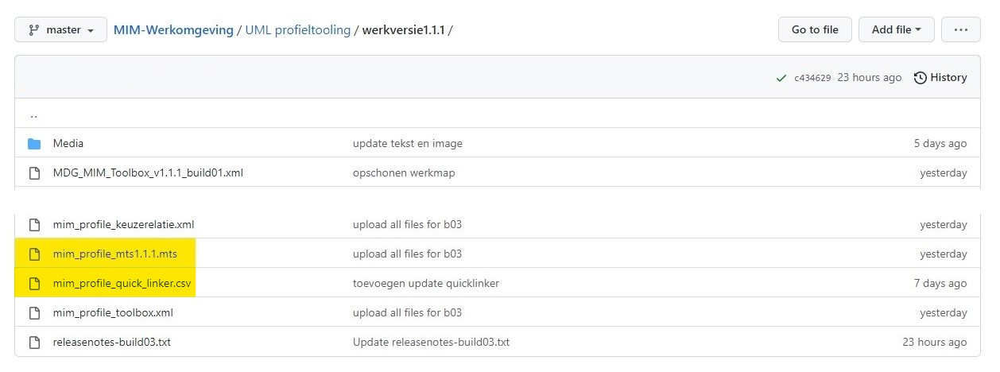
1.2 Benodigde profielen
Controleer of je beschikt over alle benodigde profielen:
- Open met Enterprise Architect het project met de MIM-profielen.
- Ga in de project browser naar het package
MIM-UMLprofiel. - Controleer of daarin de benodigde profile packages aanwezig zijn:
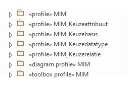
- Controleer of in het package
«profile» MIMhet element«document» QuickLinkeraanwezig is.
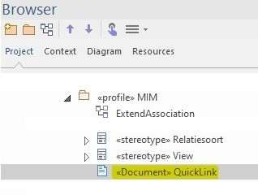
NOTE: Het CSV-bestand van de QuickLinker is een kopie van de informatie die in dit element is opgeslagen. Als je wijzigingen wilt aanbrengen in de QuickLinker, of als er in het model wijzingen zijn doorgevoerd die van invloed zijn op de QuickLinker, kun je die met behulp van het CSV-bestand aanpassen).
Indien de profielen al in XML-formaat beschikbaar zijn om de volgende stap over te slaan en direct te beginnen met het genereren van de toolbox.
1.3 Versienummer Toolbox
Het is handig om een toolbox een versienummer mee te geven. Hiervoor zijn verschillende manieren. Bovendien is het mogelijk om te kiezen hoever je deze nummering doorvoert. Hieronder wordt uitgelegd op welke manier de MIM-toolbox van een versienummer wordt voorzien. Het belangrijkste uitgangspunt is dat het versienummer van de MIM-toolbox correspondeert met het versienummer van de MIM-dataspecificatie.
Format: MIM<spatie>#.#.#
Voor de MIM-toolbox is besloten om het versienummer op verschillende plekken mee te geven:
- bij het genereren van de toolbox
- bij het genereren van het profile
- als alias van het package
- als alias van de toolbox pages
- optioneel: stereotype in diagram. Let op: als je dit veranderd, moet je ook het csv-bestand van de Quick Linker aanpassen).
1.3.1 Versienummer MDG Technology (Toolbox)
Dit is het officiële versienummer. Als een gebruiker de toolbox importeert, kan dit teruggevonden worden onder Specialize > Manage Tech. In het venster dat dan verschijnt zoek je MIM op in de kolom Technology. In het subvenster rechtsboven vind je het versienummer terug.
1.3.2 Versienummer profile
De toolbox wordt gegenereerd uit profielen. Deze hebben ook een versienummer. Dit nummer is o.a. terug te vinden in XML-bestand. Omdat er in de loop van de tijd meerdere profielen gemaakt zullen worden, is het verstandig om dit in te vullen. Door dit bij te houden kun je in het XML-bestand van het profiel terugvinden welk profiel aan een bepaalde toolbox ten grondslag ligt.
1.3.3 Versienummer package
Door in het veld Alias van elk package het versienummer mee te geven kan een gebruiker van de toolbox in één oogopslag in het properties-venster zien met welke versie van de toolbox een modelelement is gemaakt. Dit is vooral handig in het dagelijks gebruik van de toolbox. Ook als je twee (versies van) MIM-modellen wilt vergelijken, geeft dit snel inzicht in de gebruikte MIM-versie.
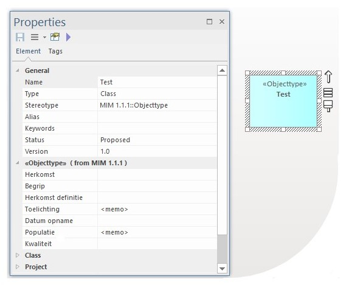
1.3.4 Versienummer toolbox pages
De toolbox pages krijgen eveneens een versienummer. Hiervoor vouw je het package met het stereotype toolbox profile uit. Voor elke toolbox page is een element met het stereotype: stereotype.
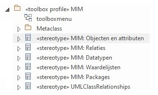
Controleer of bij elk element het versienummer klopt.
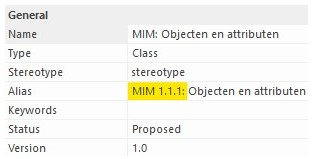
Hierdoor ziet de gebruiker van de toolbox in één oogopslag met welke versie er gewerkt wordt.
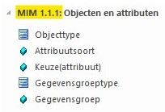
1.3.5 Versienummer diagram
In MIM heeft het diagram geen versienummer. De MIM-dataspecificatie zegt daarom ook niets over een diagram; het is immers een hulpmiddel.
LET OP: Indien je ervoor kiest om de naam van het diagram toch aan te passen, dient de nieuwe diagramnaam ook worden doorgevoerd in het Quick Linker-element (
kolom E:Diagram Filter).
2 Profiel publiceren
2.1 Publiceer package als UML-profiel
NOTE: Tussenkoppen toevoegen
- Navigeer naar het package
MIM-UMLprofiel. - Selecteer vervolgens één van de bovengenoemde profielen (bijv.
«profile» MIM). - Ga naar: Specialize.
- Kies Publish Package as UML Profile.
- En klik op: Publish Pack As UML profile.
- Er verschijnt nu een nieuw venster.
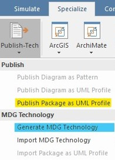
- Voer profile name in: MIM.
- Kies de locatie waar je het profiel wilt opslaan en geef het bestand een herkenbare naam
- Voer het versienummer van de corresponderende MIM-dataspecificatie in (bijv.:
1.1.1).
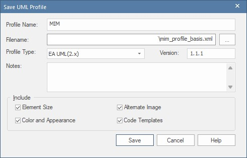
Let op er zijn twee belangrijke voorwaarden:
1. De profile name moet overeenkomenm met de naam van het package.
2. De namen van de packages met de stereotypen «profile», «profile diagram» en «profile toolbox» moeten exact hetzelfde zijn.
3. De naam van een package moet overeenkomen met de prefix van een toolbox-element (zie: afbeelding).
Opmerking: Dat er daarnaast packages zijn met een andere naam, maakt niet uit, zoals bijv.
MIM_Keuzebasis, zo lang de drie voorgenoemde packages maar hetzelfde zijn.
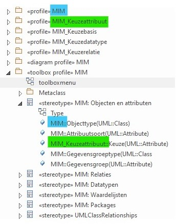
Opmerking: Een toolbox-element verwijst naar de het package met het bijbehorende profiel. Als je de packagenaam van een profiel aanpast, verandert de naam van het toolbox-element niet automatisch mee. In de uiteindelijke toolbox zul je dit element dan niet kunnen gebruiken.
- Controleer of aan deze voorwaarden voldaan wordt.
- Klik: 'Save'
- Herhaal deze stappen voor alle profielen
- Ga daarna door na de volgende stap om op basis van de profielen een toolbox te genereren.
3 Genereer MDG Technologie
Doorloop voor het genereren van een toolbox de volgende stappen in de Generate MDG Technology Wizard.
3.1 Selecteer package
- Selecteer het package waaronder alle subpackages vallen, in dit geval:
MIM-UMLprofiel.
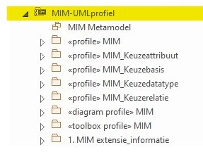
3.2 Open wizard
- Klik op 'Specialize' in de ribbon.
- Kies: 'Publish Package'.
- Kies: 'Generate MDG Technology'.
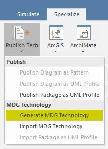
3.3 Selecteer MTS-bestand
- Kies 'Volgende'.
- Kies 'Open an existing MTS file'.
- Negeer de melding.
Opm: Het MTS-bestand vult een aantal standaard configuraties vooraf in, maar je kunt deze tijdens het proces nog aanpassen. Dit is een handig bestand. Het kan voorkomen dat je na het genereren van de toolbox aanpassingen wilt maken. Als je na het aanpassen van de gegevens opnieuw de toolbox wilt genereren, is het fijn als je deze gegevens niet opnieuw hoeft in te vullen.
3.4 Controleer gegevens
Vanuit het MTS-bestand wordt het volgende venster al ingevuld
- Technology: MIM
- Filename: (kies een naam en locatie)
- ID: build + build number (bijv.: build03)
- Version: 1.1.1
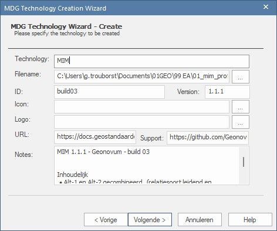
Toelichting 1. Icon en logo: deze velden blijven vooralsnog leeg. 1. URL: link naar corresponderende MIM-documentatie op GitHub/ReSpec. 1. Support: link naar website Geonovum. 1. Notes: Vul in het notes veld kort in wat is er in deze versie nieuw is.
- Klik 'Volgende'.
3.5 Controleer instellingen
- Controleer of Profiles, Diagram Types en Toolboxes zijn geselecteerd
- Wijzig indien nodig de instellingen
- Klik op 'Ok'
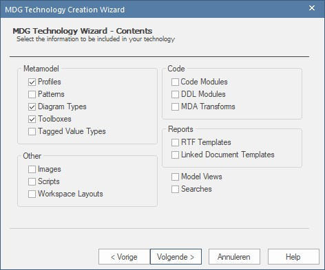
3.6 Selecteer profiles
- Alle configuraties kun je laden vanuit de MTF file.
- Voor de eerste keer kun je ook een MTS-bestand genereren.
- Select: 'Files To Be Included As Profiles'.
- Kies hier alle XML-bestanden, behalve de toolboxprofile.
- Klik 'Volgende'.
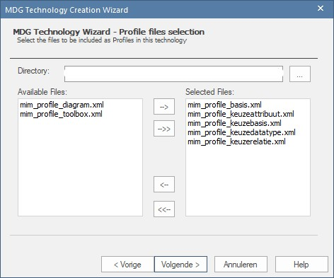
3.7 Selecteer diagrams
- Select: 'Files To Be Included As Diagram definitions'
- Kies hier het diagramprofiel
- Klik 'Volgende'.
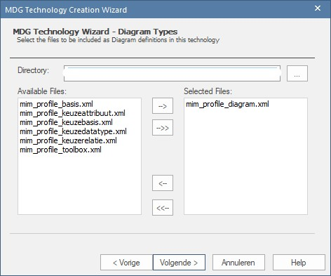
3.8 Selecteer Toolboxes
- Select: 'Files To Be Included As Toolbox Definitions'
- Kies hier het toolboxprofiel
-
Klik 'Volgende'.
-
In de volgende stap selecteer je tot slot het toolbox profiel.
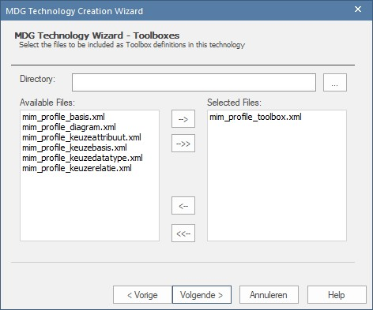
3.9 Controleer gegevens en voltooi proces
- Klik 'Volgende'.
- Check de box 'Save to MTS' en klik op 'Voltooien'
- Indien je wijzigingen in de configuratie hebt aangebracht:
- Kies checkbox 'Save To MTS'
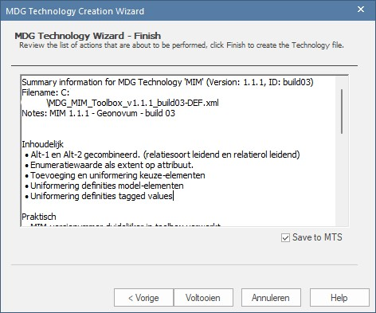
- Klik: 'Voltooien'
4 Test de Toolbox
- Laad het MIM-profiel via "Resources"
- maar er is een EAP-testf file
- Verschillende manieren om de nieuwe toolbox te testen
- Een model bouwen met alle MIM-mogelijkheden erin
- Of: een nieuwe toolbox laden en update van het bestaande model uitvoeren
- En dat kan door MIM metaklassen te slepen
- Of door gebruik te maken va "Sync Tagged Values And Constraints"
- Deze laatste optie vind je terug in het "Resources" menu
5 Quicklinker
NOTE: verder uitwerken
In ieder geval beschrijven:
- CSV-bestand nodig
- In Nederlandse versies van OS, is scheidingsteken een puntkomma: ;
- Voor Enterprise heb je een komma (,) nodig als scheidingsteken.
- Ook iets zeggen over werken in Excel, kan ook in EAP, maar werkt onoverzichtelijk.
- Overigens schijnt er ook een alternatieve (lees:eenvoudigere) methode te zijn vanaf een bepaalde EA-versie (nog uitzoeken!)
Afbeeldingen
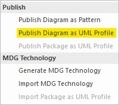
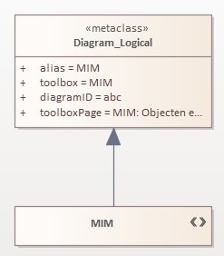
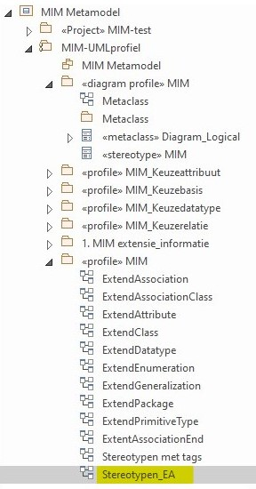
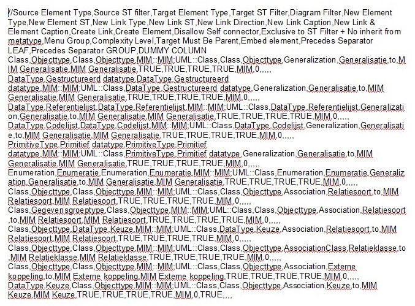
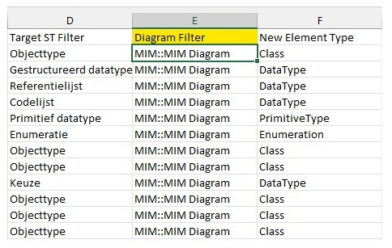
6 Aandachtspunten
NOTE: verder uitwerken
- Tekstveld voor toelichting, niet
initial value, maarnotes fieldals datatype - Uitgebreide toelichting wordt afgekapt vanwege maximale lengte.
- Profiel niet elke keer opnieuw moeten laden door het kopppelen aan een (std.) diagram
- MIM 1.1 build 1
- Vorige versie had ook zo'n naam, dit kun je op website of github terugvinden. gaat om de naam van de het XML
7 MIM MDG
NOTE: verder uitwerken
- profile helpers, model wizard: https://sparxsystems.com/enterprise_architect_user_guide/15.2/modeling/using_the_profile_helpers.html
- Create Diagram Profiles using the Profile Helpers:https://sparxsystems.com/enterprise_architect_user_guide/15.2/modeling/create_diagram_profiles_using_.html
- Morgen weer verder!
8 Regels
NOTE: verder uitwerken
«profile»,«diagram profile»en«toolbox profile»moeten dezelfde naam dragen- Bij het genereren van een profiel, moet profile name gelijk zijn aan de naam die het profiel draagt
- Binnen een package mogen elementen niet dezelfde naam hebben, maar MIM kent verschillende elementen met de naam 'Keuze'. Om dit mogelijk te maken in de toolbox, zijn voor de keuze-elementen aparte aanvullende packages gemaakt. Vandaar dat er meerdere packages
«profile»zijn.